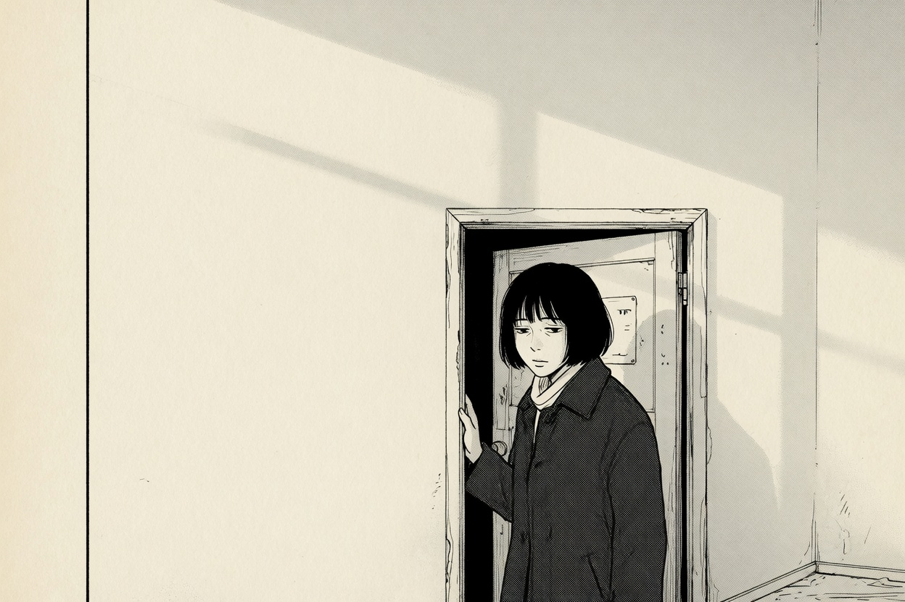

The prompting path · 01 · Craft
The grammar of a panel
A manga panel is a sentence. If you only list nouns, the picture has nothing to do.

A prompt that reads “manga girl, city, night, detailed, masterpiece” is not a panel. It is a bag of nouns. The model will pick a pose, a crop, and a mood for you, and it will pick the average of all of them.
A panel has slots. You do not need every slot every time. You do need to know which ones you left blank on purpose.
The slots
Subject. Who is in the frame, and what they are doing at this instant. Not their personality. The verb. She keeps one hand on the door. He does not look up from the bowl.
Shot. How much of the person or the place we are allowed to see. Extreme close-up, close-up, medium, full figure, wide. Say it in those words. “Dynamic” is not a shot.
Angle. Eye level, slight high, high, slight low, low, overhead. Angle is an opinion about the person. A low angle makes a doorway feel like a gate. A high angle makes the same person look as if the room is larger than they are.
Light. One direction, one quality. Morning from the left. A single tube on the ceiling. Name none, and the picture grows three light sources that do not agree.
Empty space. Where the panel is not busy. This is the slot almost everyone skips, and it is the one that makes the picture look drawn instead of filled. “The upper half is bare wall.” “The right side is empty sky, kept clear for a balloon later.”
Balloon room is not a caption. You are reserving paper. If you ask the model to draw the words, it will invent letters. Ask it to leave the space, and set the type afterwards.
Then the line. What the ink is doing: clean contour, gray only on the coat, no background past the door frame.
The same moment, three ways
manga style, woman, doorway, morning, coat, beautiful, highly detailed
A manga panel, no lettering and no speech balloons. A woman in her thirties in a dark wool coat pauses in a narrow apartment doorway, one hand still on the frame, medium shot, eye level. Early morning light from the left. The upper half of the panel is bare wall and soft shadow. Clean ink line, gray tone only on the coat, the rest of the background left as open paper.
Same person, same doorway, same morning light. Close-up on her hand and the frame, the coat only a dark shape at the left edge. The rest of the panel is the pale door and a strip of wall. The upper right is empty paper. No lettering, no speed lines.
A is a theme. B is a panel. C is the next panel.
You get a cut by changing one or two slots — usually the shot or the angle — and keeping the others still. If everything changes, you did not cut. You changed the channel.
When it comes back wrong
Do not add adjectives. Find the slot that was empty and write it. If her face fills the frame, you never named the shot. If the hallway is a cathedral, you never said how close the walls are. If the mood is epic and you wanted a Tuesday morning, you asked for a feeling instead of a light.
Feelings are allowed after the slots are filled, not instead of them. “She is tired” is weaker than “her shoulder rests against the frame, coat still on.”